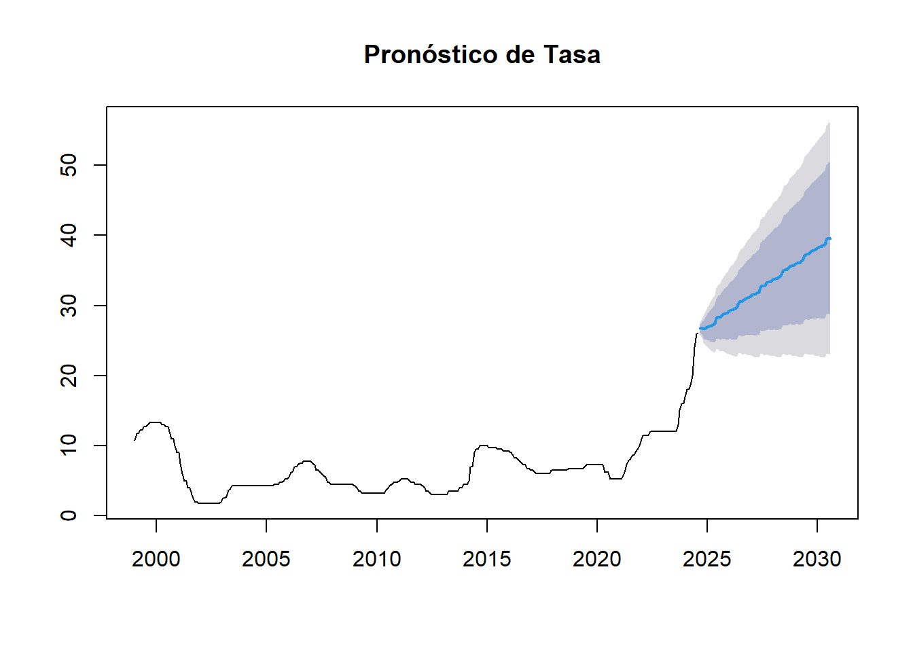

Capítulo: 8 6. Tasa Lag1 vs Rezagos
Las gráficas entre Tasa_lag1 y sus rezagos también muestran una alta correlación. Esto es de esperar, ya que los valores rezagados de una variable tienden a mostrar correlación fuerte con rezagos cercanos.
Los gráficos de rezago muestran una clara autocorrelación tanto en las variables de Tasa como en el Promedio Móvil, lo que sugiere que los valores actuales están muy influenciados por sus valores anteriores.
No se observan grandes fluctuaciones o cambios abruptos en la serie temporal, lo que implica que los datos de tasa y promedio móvil siguen una evolución suave a lo largo del tiempo.
La estructura cíclica en los meses sugiere que existe un patrón estacional predecible, lo cual es clave para definir modelos de predicción de series temporales con componentes estacionales, como modelos ARIMA/SARIMA o de descomposición estacional.
Descomposición: Con la función stl(), se descompone la serie en tendencia, estacionalidad y componente residual.
Estacionariedad: La prueba ADF indica si la serie tiene una raíz unitaria (es decir, si no es estacionaria).
Diferenciación: Si la serie no es estacionaria, la diferenciación la ayuda a volverse estacionaria.

8.2 Estacionariedad
##
## Augmented Dickey-Fuller Test
##
## data: ts_data
## Dickey-Fuller = -1.15, Lag order = 6, p-value = 0.9133
## alternative hypothesis: stationary8.4 Autocorrelación (ACF) y Parcial (PACF)
## [1] "Anio" "Mes" "Fecha" "Tasa"
## [5] "PromedioMovil" "Tasa_lag1"## [1] "Fecha" "Tasa"
8.5 Volver a verificar la Estacionariedad tras la Diferenciación
##
## Augmented Dickey-Fuller Test
##
## data: differenced_data
## Dickey-Fuller = -3.0792, Lag order = 6, p-value = 0.1214
## alternative hypothesis: stationary## [1] "Anio" "Mes" "Fecha" "Tasa"
## [5] "PromedioMovil" "Tasa_lag1"ts_data <- ts(data2[["Tasa"]], start = c(1999, 1), frequency = 12)
# Graficar ACF y PACF
par(mfrow = c(1, 2))
# Graficar ACF
#acf(ts_data, main = "ACF de la Serie Original")
# Graficar PACF
#pacf(ts_data, main = "PACF de la Serie Original")
# Ajustar el modelo ARIMA(0,0,3)(0,0,1)[12]
modelo_arima <- Arima(ts_data, order = c(0, 0, 3), seasonal = c(0, 0, 1))
# Resumen del modelo ajustado
summary(modelo_arima)## Series: ts_data
## ARIMA(0,0,3)(0,0,1)[12] with non-zero mean
##
## Coefficients:
## ma1 ma2 ma3 sma1 mean
## 1.7171 1.6105 0.7743 0.5829 7.3301
## s.e. 0.0381 0.0479 0.0376 0.0502 0.3817
##
## sigma^2 = 0.724: log likelihood = -389.13
## AIC=790.27 AICc=790.55 BIC=812.65
##
## Training set error measures:
## ME RMSE MAE MPE MAPE MASE
## Training set -0.009182104 0.8439211 0.5782735 -5.077274 10.40789 0.2748598
## ACF1
## Training set 0.364348
##
## Ljung-Box test
##
## data: Residuals from ARIMA(0,0,3)(0,0,1)[12] with non-zero mean
## Q* = 604.63, df = 20, p-value < 2.2e-16
##
## Model df: 4. Total lags used: 24# Pronosticar 12 períodos (ajustado para cubrir hasta 2030)
pronostico <- forecast(modelo_arima, h = 72) # 72 meses = 6 años
# Graficar el pronóstico con el eje x correcto
plot(pronostico, xlab = "Año", ylab = "Tasa", main = "Pronóstico de Tasa")
## [1] "Anio" "Mes" "Fecha" "Tasa"
## [5] "PromedioMovil" "Tasa_lag1"ts_data <- ts(data2[["Tasa"]], start = c(1999, 1), frequency = 12)
# Normal QQ Plot de los residuos
#residuos_diff <- residuals(modelo_arima_diff)
#par(mfrow = c(1, 1))
#qqnorm(residuos_diff, main = "Normal QQ Plot de Residuos")
#qqline(residuos_diff, col = "red")
# Pronosticar 72 períodos (6 años)
#n_periods <- 72
#pronostico_diff <- forecast(modelo_arima_diff, h = n_periods)
# Graficar el pronóstico
#plot(pronostico_diff, main = "Pronóstico de Tasa")# Cargar las bibliotecas necesarias
library(forecast) # Para el modelado ARIMA
library(tseries) # Para funciones adicionales
library(ggplot2) # Para gráficos
# Verificar los nombres de las columnas en data2
print(colnames(data2))## [1] "Anio" "Mes" "Fecha" "Tasa"
## [5] "PromedioMovil" "Tasa_lag1"# Convertir los datos a un objeto ts, usando frecuencia mensual
ts_data <- ts(data2[["Tasa"]], start = c(1999, 1), frequency = 12)
# Probar la estacionariedad de la serie original
adf_test <- adf.test(ts_data, alternative = "stationary")
print(adf_test)##
## Augmented Dickey-Fuller Test
##
## data: ts_data
## Dickey-Fuller = -1.15, Lag order = 6, p-value = 0.9133
## alternative hypothesis: stationary# Diferenciar la serie si no es estacionaria
differenced_data <- diff(ts_data)
# Probar la estacionariedad de la serie diferenciada
adf_test_diff <- adf.test(differenced_data, alternative = "stationary")
print(adf_test_diff)##
## Augmented Dickey-Fuller Test
##
## data: differenced_data
## Dickey-Fuller = -3.0792, Lag order = 6, p-value = 0.1214
## alternative hypothesis: stationary# Ajustar el modelo ARIMA(0,1,3)(0,1,1)[12] si es necesario
modelo_arima_diff <- Arima(ts_data, order = c(0, 1, 3), seasonal = c(0, 1, 1))
# Resumen del modelo ajustado
summary(modelo_arima_diff)## Series: ts_data
## ARIMA(0,1,3)(0,1,1)[12]
##
## Coefficients:
## ma1 ma2 ma3 sma1
## 0.3125 0.2829 0.2279 -0.8757
## s.e. 0.0706 0.0527 0.0733 0.0470
##
## sigma^2 = 0.1739: log likelihood = -167.4
## AIC=344.81 AICc=345.02 BIC=363.24
##
## Training set error measures:
## ME RMSE MAE MPE MAPE MASE
## Training set 0.03580656 0.405304 0.2349259 0.6962434 4.046636 0.1116629
## ACF1
## Training set 0.02835974
##
## Ljung-Box test
##
## data: Residuals from ARIMA(0,1,3)(0,1,1)[12]
## Q* = 46.306, df = 20, p-value = 0.0007315
##
## Model df: 4. Total lags used: 24# Normal QQ Plot de los residuos
residuos_diff <- residuals(modelo_arima_diff)
par(mfrow = c(1, 1)) # Asegúrate de que solo hay un gráfico en la ventana
qqnorm(residuos_diff, main = "Normal QQ Plot de Residuos")
qqline(residuos_diff, col = "red")
# Realizar el test de normalidad de Shapiro-Wilk
shapiro_test <- shapiro.test(residuos_diff)
print(shapiro_test)##
## Shapiro-Wilk normality test
##
## data: residuos_diff
## W = 0.7956, p-value < 2.2e-16# Pronosticar 72 períodos (6 años)
n_periods <- 72
pronostico_diff <- forecast(modelo_arima_diff, h = n_periods)
# Graficar el pronóstico
plot(pronostico_diff, main = "Pronóstico de Tasa")
#install.packages("fGarch", repos = "http://cran.us.r-project.org")
ts_data <- ts(data2[["Tasa"]], start = c(1999, 1), frequency = 12)
adf_test <- adf.test(ts_data, alternative = "stationary")
print(adf_test)##
## Augmented Dickey-Fuller Test
##
## data: ts_data
## Dickey-Fuller = -1.15, Lag order = 6, p-value = 0.9133
## alternative hypothesis: stationarydifferenced_data <- diff(ts_data)
adf_test_diff <- adf.test(differenced_data, alternative = "stationary")
print(adf_test_diff)##
## Augmented Dickey-Fuller Test
##
## data: differenced_data
## Dickey-Fuller = -3.0792, Lag order = 6, p-value = 0.1214
## alternative hypothesis: stationary# Ajustar el modelo ARIMA(0,1,3)(0,1,1)[12]
modelo_arima_diff <- Arima(ts_data, order = c(0, 1, 3), seasonal = c(0, 1, 1))
# Resumen del modelo ajustado
summary(modelo_arima_diff)## Series: ts_data
## ARIMA(0,1,3)(0,1,1)[12]
##
## Coefficients:
## ma1 ma2 ma3 sma1
## 0.3125 0.2829 0.2279 -0.8757
## s.e. 0.0706 0.0527 0.0733 0.0470
##
## sigma^2 = 0.1739: log likelihood = -167.4
## AIC=344.81 AICc=345.02 BIC=363.24
##
## Training set error measures:
## ME RMSE MAE MPE MAPE MASE
## Training set 0.03580656 0.405304 0.2349259 0.6962434 4.046636 0.1116629
## ACF1
## Training set 0.02835974
##
## Ljung-Box test
##
## data: Residuals from ARIMA(0,1,3)(0,1,1)[12]
## Q* = 46.306, df = 20, p-value = 0.0007315
##
## Model df: 4. Total lags used: 24# Normal QQ Plot de los residuos
residuos_diff <- residuals(modelo_arima_diff)
par(mfrow = c(1, 1))
qqnorm(residuos_diff, main = "Normal QQ Plot de Residuos")
qqline(residuos_diff, col = "red")
# Realizar el test de normalidad de Shapiro-Wilk
shapiro_test <- shapiro.test(residuos_diff)
print(shapiro_test)##
## Shapiro-Wilk normality test
##
## data: residuos_diff
## W = 0.7956, p-value < 2.2e-16##
## ***** ESTIMATION WITH ANALYTICAL GRADIENT *****
##
##
## I INITIAL X(I) D(I)
##
## 1 1.471681e-01 1.000e+00
## 2 5.000000e-02 1.000e+00
## 3 5.000000e-02 1.000e+00
##
## IT NF F RELDF PRELDF RELDX STPPAR D*STEP NPRELDF
## 0 1 -1.336e+02
## 1 3 -1.502e+02 1.11e-01 1.26e-01 3.5e-01 1.9e+03 1.0e-01 1.18e+02
## 2 4 -1.536e+02 2.19e-02 8.14e-02 2.5e-01 2.2e+00 1.0e-01 7.36e+02
## 3 6 -1.606e+02 4.39e-02 3.93e-02 5.1e-02 3.9e+00 2.3e-02 4.21e+02
## 4 7 -1.657e+02 3.08e-02 6.33e-02 9.6e-02 3.9e+00 4.6e-02 4.92e+02
## 5 8 -1.708e+02 2.98e-02 4.44e-02 7.7e-02 2.0e+00 4.6e-02 1.72e+02
## 6 9 -1.763e+02 3.12e-02 3.25e-02 6.6e-02 2.0e+00 4.6e-02 1.55e+02
## 7 10 -1.833e+02 3.82e-02 5.07e-02 1.2e-01 2.0e+00 9.2e-02 6.74e+01
## 8 12 -1.842e+02 4.82e-03 1.46e-02 2.4e-02 2.0e+00 2.2e-02 2.40e+01
## 9 13 -1.867e+02 1.33e-02 1.73e-02 1.8e-02 2.0e+00 2.2e-02 1.28e+01
## 10 16 -1.936e+02 3.54e-02 9.56e-02 1.9e-01 2.0e+00 2.5e-01 1.21e+01
## 11 21 -1.978e+02 2.13e-02 6.13e-02 1.1e-02 3.1e+00 1.2e-02 3.57e-01
## 12 22 -1.981e+02 1.79e-03 1.32e-03 9.3e-03 2.0e+00 1.2e-02 7.32e-03
## 13 23 -1.983e+02 6.06e-04 8.60e-04 7.5e-03 2.0e+00 1.2e-02 3.02e-02
## 14 26 -1.984e+02 7.73e-04 1.10e-03 3.7e-02 1.8e+00 5.4e-02 1.40e-02
## 15 27 -1.985e+02 6.45e-04 1.26e-03 4.7e-02 1.5e+00 5.4e-02 5.86e-03
## 16 29 -1.986e+02 6.98e-05 1.39e-04 1.2e-02 9.5e-01 1.8e-02 2.86e-04
## 17 30 -1.986e+02 4.70e-05 6.56e-05 1.1e-02 6.4e-01 1.8e-02 7.84e-05
## 18 32 -1.986e+02 9.40e-07 4.03e-06 3.0e-03 7.1e-01 4.4e-03 5.67e-06
## 19 35 -1.986e+02 2.06e-07 5.00e-07 5.0e-04 1.4e+00 7.4e-04 1.80e-06
## 20 38 -1.986e+02 9.89e-08 1.38e-07 1.6e-04 1.8e+00 2.4e-04 1.34e-06
## 21 41 -1.986e+02 2.63e-08 4.21e-08 5.6e-05 1.9e+00 8.2e-05 1.22e-06
## 22 53 -1.986e+02 4.29e-16 3.48e-18 3.0e-15 6.7e+08 4.9e-15 1.18e-06
## 23 54 -1.986e+02 -7.16e-16 6.95e-18 5.9e-15 3.3e+08 9.8e-15 1.18e-06
##
## ***** FALSE CONVERGENCE *****
##
## FUNCTION -1.985695e+02 RELDX 5.909e-15
## FUNC. EVALS 54 GRAD. EVALS 23
## PRELDF 6.954e-18 NPRELDF 1.176e-06
##
## I FINAL X(I) D(I) G(I)
##
## 1 2.417150e-02 1.000e+00 9.607e-02
## 2 5.671540e-01 1.000e+00 5.482e-02
## 3 4.193714e-01 1.000e+00 -8.692e-02##
## Call:
## garch(x = residuos_diff, order = c(1, 1))
##
## Model:
## GARCH(1,1)
##
## Residuals:
## Min 1Q Median 3Q Max
## -4.45689 -0.39305 0.05776 0.43589 5.18143
##
## Coefficient(s):
## Estimate Std. Error t value Pr(>|t|)
## a0 0.024172 0.003891 6.212 5.25e-10 ***
## a1 0.567154 0.080415 7.053 1.75e-12 ***
## b1 0.419371 0.071239 5.887 3.94e-09 ***
## ---
## Signif. codes: 0 '***' 0.001 '**' 0.01 '*' 0.05 '.' 0.1 ' ' 1
##
## Diagnostic Tests:
## Jarque Bera Test
##
## data: Residuals
## X-squared = 390.33, df = 2, p-value < 2.2e-16
##
##
## Box-Ljung test
##
## data: Squared.Residuals
## X-squared = 0.11988, df = 1, p-value = 0.7292## Min. 1st Qu. Median Mean 3rd Qu. Max.
## -1.45643 -0.11092 0.01333 0.03581 0.14946 3.48249